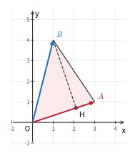
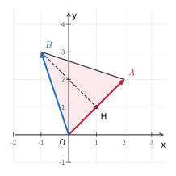
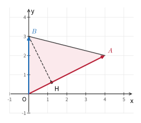

別冊練習問題 5 の解答 面積と垂線の足
(1) 座標平面上に \(O(0,0),\ A\left(3,\ 1\right),\ B\left(1,\ 4\right)\) がある。△\(OAB\) の面積と、\(B\) から直線 \(OA\) に下ろした垂線の足 \(H\) の座標を求めよ。
面積の公式
\(\triangle OAB=\dfrac12\sqrt{|\vec a|^2|\vec b|^2-(\vec a\cdot\vec b)^2}=\dfrac12|a_1b_2-a_2b_1|\)。
\[S=\dfrac12\left|\left(3\right)\times\left(4\right)-\left(1\right)\times\left(1\right)\right|=\dfrac{11}{2}\]垂線の足 \(H\) の式
\(H\) は直線 \(OA\) 上にあるので \(\overrightarrow{OH}=k\vec a\)。
\[\overrightarrow{BH}\cdot\vec a=0\ \Rightarrow\ (k\vec a-\vec b)\cdot\vec a=0\ \Rightarrow\ k=\dfrac{\vec a\cdot\vec b}{|\vec a|^2}\]\(k\) と \(H\) の座標
\[k=\dfrac{7}{10}=\dfrac{7}{10}\]\[\overrightarrow{OH}=\dfrac{7}{10}\left(3,\ 1\right)=\left(\dfrac{21}{10},\ \dfrac{7}{10}\right)\]
【答案】
\[S=\dfrac{11}{2},\ H\left(\dfrac{21}{10},\ \dfrac{7}{10}\right)\]答
(2) 座標平面上に \(O(0,0),\ A\left(2,\ 2\right),\ B\left(-1,\ 3\right)\) がある。△\(OAB\) の面積と、\(B\) から直線 \(OA\) に下ろした垂線の足 \(H\) の座標を求めよ。
面積の公式
\(\triangle OAB=\dfrac12\sqrt{|\vec a|^2|\vec b|^2-(\vec a\cdot\vec b)^2}=\dfrac12|a_1b_2-a_2b_1|\)。
\[S=\dfrac12\left|\left(2\right)\times\left(3\right)-\left(2\right)\times\left(-1\right)\right|=4\]垂線の足 \(H\) の式
\(H\) は直線 \(OA\) 上にあるので \(\overrightarrow{OH}=k\vec a\)。
\[\overrightarrow{BH}\cdot\vec a=0\ \Rightarrow\ (k\vec a-\vec b)\cdot\vec a=0\ \Rightarrow\ k=\dfrac{\vec a\cdot\vec b}{|\vec a|^2}\]\(k\) と \(H\) の座標
\[k=\dfrac{4}{8}=\dfrac{1}{2}\]\[\overrightarrow{OH}=\dfrac{1}{2}\left(2,\ 2\right)=\left(1,\ 1\right)\]
【答案】
\[S=4,\ H\left(1,\ 1\right)\]答
(3) 座標平面上に \(O(0,0),\ A\left(4,\ 2\right),\ B\left(0,\ 3\right)\) がある。△\(OAB\) の面積と、\(B\) から直線 \(OA\) に下ろした垂線の足 \(H\) の座標を求めよ。
面積の公式
\(\triangle OAB=\dfrac12\sqrt{|\vec a|^2|\vec b|^2-(\vec a\cdot\vec b)^2}=\dfrac12|a_1b_2-a_2b_1|\)。
\[S=\dfrac12\left|\left(4\right)\times\left(3\right)-\left(2\right)\times\left(0\right)\right|=6\]垂線の足 \(H\) の式
\(H\) は直線 \(OA\) 上にあるので \(\overrightarrow{OH}=k\vec a\)。
\[\overrightarrow{BH}\cdot\vec a=0\ \Rightarrow\ (k\vec a-\vec b)\cdot\vec a=0\ \Rightarrow\ k=\dfrac{\vec a\cdot\vec b}{|\vec a|^2}\]\(k\) と \(H\) の座標
\[k=\dfrac{6}{20}=\dfrac{3}{10}\]\[\overrightarrow{OH}=\dfrac{3}{10}\left(4,\ 2\right)=\left(\dfrac{6}{5},\ \dfrac{3}{5}\right)\]
【答案】
\[S=6,\ H\left(\dfrac{6}{5},\ \dfrac{3}{5}\right)\]答